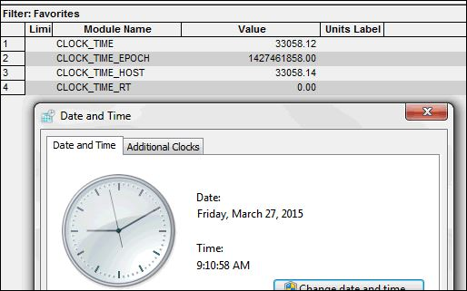

iTest User's Guide
System channels are added to the RDB automatically by iTest upon system start-up, unless otherwise noted in the channel's description. These channels can be referenced by VCL and display objects, for example, and are, in some cases, used by internal iTest processes.
Legacy Channels and Descriptions
| Name | Release | Type | Purpose |
| BITS_SEC | - | - | Throughput of the link between Data_Engine and vxin_exec. |
| LimitStatus | - | - | Set to 1 when limits are being processed. |
| CLOCK_TIME | - | - | Wall time/date in tics. It is the number of seconds since midnight. It gets created as follows:CLOCK_TIME = (hour * 3600) + (minute * 60) + seconds + (milliseconds * 0.001) Example for 9:10:58AM below:  CLOCK_TIME = 33058 = (9 *3600) + (10) *60) + 58 |
| CLOCK_TIME_HOST | - | - | This is the number of seconds since midnight on the GUI PC. Data_Engine reads the GUI PC's clock to send this value to vxin_exec. |
| CLOCK_TIME_RT | - | - | This is the number of seconds since midnight on the real-time PC. There exists an internal time keeper that is maintained by vxin_exec and vxin_exec sets CLOCK_TIME_RT based on this clock. vxin_exec also sends this internal clock time information to data_engine, and data_engine subsequently sends a message back down to vxin_exec to set the CLOCK_TIME channel. An application may monitor the difference between CLOCK_TIME and CLOCK_TIME_RT to determine the length of time of a GUI to real-time PC network interruption. |
| CRS_BLOCK_CONTROL | - | - | Contains the time in seconds and microseconds. |
| SAVELIMGROUP | - | - | Used by the SAVELIMITS and RESTORELIMITS procedures that are automatically created by TestBuilder. |
| LIMGROUP | - | - | Used by the SAVELIMITS and RESTORELIMITS procedures that are automatically created by TestBuilder. |
| CRS_CONTROL | - | - | Set to 1 to start Blackbox. |
| DAYS_TIME | - | - | Days since start of year 2000. |
| EXEC_LOOP_TIME | - | - | vxin_exec's loop time (s). |
| KERNEL_LOOP_TIME | - | - | vxin_kernel's loop time (s). |
| ShutDownSystem | - | - | Set to 1 to shutdown all driver processes. |
| sys_CHECK_OUTPUTS_PERF | - | - | Amount of time Data_Engine uses to process outputs and send to Vxin_exec. |
| sys_OUTS_PER_SCAN | - | - | Current number of outputs needing to be set (for internal system diagnostics only). |
| sys_OUTS_PER_SCAN_MAX | - | - | Maximum number of outputs needing to be set (for internal system diagnostics only). |
| sys_UDP_DROPS | - | - | UDP packets lost (for internal system diagnostics only). |
| sys_VS_QUEUE | - | - | Current number of strings needing to be set (for internal system diagnostics only). |
| sys_VS_QUEUE_MAX | - | - | Maximum number of strings needing to be set (for internal system diagnostics only). |
| AUTO_MODE | - | VO | Is the PID Control dialog in manual (0) or Auto (1) Mode. |
| VS_SYSFaultStatus | - | VS | System string value for fault reason reported from the 2916 card. |
| VO_SYSFaultStatus | - | VO | System numeric value for fault reason reported from the 2916 card. |
| VO_SYSSafetyReset | - | VO | The user must set this channel to 1 to reset the 2916 faults. |
| PENDANT_ESTOP | - | VO | This channel is set to 1 when the pendant.exe driver detects that the ESTOP button is depressed. |
| VO_SYSTachloss | - | VO | This channel is set to 1 when the 2916 has detected a tachometer signal lost fault. |
| VO_SYSBoardTemperature | - | VO | This channel is set to the temperature of the CPU for a 4500 RTP. |
| VO_SYSPulsesPerRev | - | VO | The user must set this channel to the number of pulses per revolution (used in the 2916 safety circuit). |
| VO_SYSOverspeed | - | VO | This channel is set to 1 when the 2916 detects an overspeed fault. |
Recently Added Channels and Descriptions
| Name | Release | Type | Purpose |
| vsSysActiveLimitGroup | - | Virtual String | Name of the active limit group. |
| voSyseGateReady | - | Virtual Output | Set to 1 when the eGate is ready. |
| voSysLogCount | - | Virtual Output | Number of currently active data logs. |
| voSysLimitState | - | Virtual Output | Numeric indicator of the current Limit Condition (Red=2, Yellow=1, Green=0, Inactive/Gray=-1). |
| vsSysLimitFault | 2.1 | Virtual String | Contains most recent channel and procedure called due to a limit violation. This channel will not reference the channel by its Alias even if the System Option type is "Alias". |
| vsSysLimitFaultAlias | 2.1 | Virtual String | Shows the Alias name and value of the last limit that caused an action to occur. If an Alias has not been defined, then it will list the channel by either its module, customer, or channel name. |
| vsSysLimitFaultMID | 3.2 | Virtual String | Module ID of the channel that last triggered a limit action. |
| voSysDQStatus | 2.1 | Virtual Output | Numeric indicator of how many channels are violating their Data Quality Condition. |
| vsSysTestStartDate | 2.1 | Virtual String | Date when a header form with a field of this channel is loaded and the form is saved. The header form can be loaded using a $FORM, $NEWFORM, or $FLEXEDIT mailslot to Softpanel. |
| vsSysTestStartTime | 2.1 | Virtual String | Time when a header form with a field of this channel is loaded and the form is saved. The header form can be loaded using a $FORM, $NEWFORM, or $FLEXEDIT mailslot to Softpanel. |
| vsSysTestName | 2.1 | Virtual String | Name of the running test as selected on the test control bar. |
| vsSysStopReason | 2.1 | Virtual String | Why the system is idle or not running as selected in the Not Running dialog. |
| voSysDisplayLabelType | 2.1 | Virtual Output | Display channel label type for those labelled in "Automatic" mode. Values reflect the current implementation. 0-Channel Name, 1-Alias, 2-CustomerName, 3-ModuleName |
| voSysInTest | 2.2 | Virtual Output | Set to 1 when the test is started or resumed by the Test Control Toolbar. It is set to 0 when stopped or paused. |
| voSysScheduleDirty | 2.2 | Virtual Output | Indicates that a schedule has been edited and not yet saved in iTest Console. |
| voSysStateTime | 2.2 | Virtual Output | Time in current state. |
| voSysStateTimeLeft | 2.2 | Virtual Output | Time left in current state. |
| tmrSysAccumTestTime | 2.2 | Virtual Timer | Support channel to accurately measure accumulated test time (voSysTotalTestTime). |
| voSysErrorSet1 | 2.3 | Virtual Output | Contains 30 (1-30) bits of error/status information. Bit: 1 : Logging buffer overflow. This is a latched setting. 2 : 0 length data log file detected. This is a latched setting. 3-30: undefined |
| voSysMailslotsQueued | 2.3 | Virtual Output | Contains current number of mailslot messages queued up that are destined for remote PCs. |
| voSysMailslotSendTimeMaxSec | 2.3 | Virtual Output | Contains the maximum time (in seconds) that was taken to send a mailslot message to a remote PC. This can be used to detect problems with remote connections. |
| vsSysTime | 2.3 | Virtual String | Time in format of hh_mm_ss. Updated by iTest Console at 1 Hz. |
| voSysDay | 2.3 | Virtual Output | Day of a month. Updated by iTest Console at 1 Hz. |
| voSysMonth | 2.3 | Virtual Output | Month of a year. Updated by iTest Console at 1 Hz. |
| voSysYear | 2.3 | Virtual Output | Year. Updated by iTest Console at 1Hz. |
| vsSysDate | 3.7 | Virtual String | This channel stores a concatenated string containing the date as the current Gregorian calendar date. The date is formatted based on the DRDateFormat powertek.ini setting and is updated using the current PC date. |
| vsSysDateTime | 3.5 | Virtual String | This channel stores a concatenated string containing both the current date and the time. The date is formatted based on the DRDateFormat powertek.ini setting. Time format is hard-coded to hh:mm:ss. |
| vsSysDateTimeUTC | 4.0 | Virtual String | This channel stores a concatenated string containing both the current coordinated universal date and time. The date is formatted based on the DRDateFormat powertek.ini setting. Time format is hard coded to hh:mm:ss. This channel is not automatically created. |
| voSysDisplayUnitsType | 2.3 | Virtual Output | System units type for units displayed in "Automatic" mode. 0-SI, 1- Metric, 2-English, 3-Original |
| vsSysSeqName | 2.3 | Virtual String | Last executed sequence name. |
| voSysSeqBlockTerminate | 2.3 | Virtual Output | If 1, then OK to exit custom block exit condition loop. |
| Seq<SeqName>StartLine | 2.3 | Virtual Output | Line number at which the sequence execute starts at for sequence restart. |
| Seq<SeqName>StartCount | 2.3 | Virtual Output | Loop count to sequence loop to start with, for sequence restart. |
| Seq<SeqName>CountName | 2.3 | Virtual String | Channel or local variable name the sequence loop uses for loop count, for sequence restart. |
| voSysLoadTableStatus | 2.3 | Virtual Output | Used by state generated code to indicate if a ramp table file is loaded. |
| voSysRampTableName | 2.3 | Virtual String | Used by state generated code for ramp from file. |
| CLOCK_TIME_EPOCH | 3.2 | Virtual Output | Number of seconds since Jan 1, 1970. |
| voSysConsoleWatchdog | 3.4 | Virtual Output | Incremented by one in 10 Hz calculations. This is reset to zero by iTest Console and AutomationPanel at 1 Hz. If the value exceeds 10, the GUI is not available or not updating. |
| voSysDynamicCalcBuildErrors | 3.4 | Virtual Output | Set to the number of errors detected during the building of dynamic calculations. Zero equals no errors; any value greater than zero indicates errors. |
| voSysFlexEditFileSaveDisable | 3.4 | Virtual Output | Flag to enable/disable the File > Save option in FlexEdit. |
| voSysHSTime | 3.4 | Virtual Output | Duration of time from which HS semaphore is given until HS scan thread is complete. |
| voSysInOurRTCnt | 3.4 | Virtual Output | Number of times the System rate thread was signaled while the thread was still working on the previous signal. |
| voSysNetSendTime | 3.4 | Virtual Output | Duration of time from which HS semaphore is given until the NetSend thread is complete. |
| voSysNumProcs | 3.4 | Virtual Output | The number of VCL procedures running. |
| voSysNumExceptions | 3.4 | Virtual Output | Number of times the program exception window, "A program error has occurred, would you like to save a .dmp file?", has appeared during this running instance of iTest. |
| voSysSSTime | 3.4 | Virtual Output | Duration of time from which HS semaphore is given until LS scan thread is complete. |
| voSysSV2Time | 3.4 | Virtual Output | Duration of time between calls to OnSendValues2. (This function fills the buffer for NetSendThread.) |
| voSys1HzCalcTime | 3.4 | Virtual Output | Duration of time from which HS semaphore is given until 1 Hz scan thread is complete. |
| voSys10HzCalcTime | 3.4 | Virtual Output | Duration of time from which HS semaphore is given until 10 Hz scan thread is complete. |
| voSys100HzCalcTime | 3.4 | Virtual Output | Duration of time from which HS semaphore is given until 100 Hz scan thread is complete. |
| voSys1000HzCalcTime | 3.4 | Virtual Output | Duration of time from which HS semaphore is given until 1000 Hz scan thread is complete. |
| voSys1kHzNumOverRuns | 3.4 | Virtual Output | Number of times the 1 kHz thread has no waiting time between being signaled. |
| voSys1kHzTotalCounts | 3.4 | Virtual Output | Number of times the 1 kHz thread was signaled. |
| numSysSchStep | 3.4 | Virtual Output | Step the schedule runner is on. 0 - nothing has run yet. -1 - finished. |
| timSysTestOnStep | 3.4 | Virtual Output | Set by schedule runner for time on current step. |
| timSysStepLeft | 3.4 | Virtual Output | Set by schedule runner for time left on current step. |
| numSysSchState | 3.4 | Virtual Output | Value set by schedule runner for status: "0" - Not Prepared "1" - Prepared "2" - Running "3" - Paused "4" - Aborted "5" - Stopped "6" - Finished This channel also controls the state of the ScheduleViewer panel's Control Bar buttons. |
| vsSysSchState | 3.4 | Virtual String | String set by schedule runner for status: 0 - "Not Prepared" 1 - "Prepared" 2 - "Running" 3 - "Paused" 4 - "Aborted" 5 - "Stopped" 6 - "Finished" |
| timSysTest | 3.4 | Virtual Output | Numeric set by schedule runner for total elapsed time in test. |
| voSysAkaChangeCounter | 3.4 | Virtual Output | voSysAkaChangeCounter will get set to the current value plus 1 each time a LOADAKAFile or LoadAliasFile mailslot message is processed by Data_Engine. If the voSysAkaChangeCounter value is 1, and a LOADAKAFile or LoadAliasFile mailslot message is received, then the voSysAkaChangeCounter value will change to 2 when the message is finished being processed. Panels and display objects monitor this counter to determine when an RDB change has been made so they can refresh some dynamically changeable fields such as customer name and units. |
| voSysiTestBuildErrors | 3.4 | Virtual Output | This channel is set to number of errors found at iTest build and rebuild. |
| voSysStartTime | 3.5 | Virtual Output | This channel contains the epoch time for when iTest was started. This may be useful in conjunction with the $GetFileTime mailslot message to fileservices. It is possible to check the date of a file to see if it has changed since iTest started up. |
| voSysServerStatus | 3.5 | Virtual Output | Default channel used to store the status of a connected LabCentral server. This channel can be superseded by the StatusCodeChannel config.ini setting. |
| voCalcOverloadError | 3.7 | Virtual Output | This value is set to 1 if any calculations (system rate, 1Hz, 10Hz, 100Hz, 1000Hz) exceeds the maximum number of operations for that set of calculations. iTest must be restarted to reset the channel to zero; rebuilds are not sufficient. |
| voSysStrTruncCnt | 4.0 | Virtual Output | This channel will get incremented each time vxin_exec has to automatically truncate a large string in VCL so it will not exceed the maximum allowed string length. User must add this channel to their solution if they wish to use it. Examples of when the voSysStrTruncCnt channel would be incremented:- SET command sets a string channel to to a string that is larger than 127 bytes. - The length of the string, after macro and channel substitution, sent using the MESSAGE command exceeds 1011 bytes. Examples of when the voSysStrTruncCnt channel would not be incremented:- The INIRead mailslot message to Data_Engine reads a string that exceeds 127 bytes. - The SET VS mailslot message to Data_Engine sets a string channel to a string that exceeds 127 bytes. |
| vsSysStrTruncMsg | 4.0 | Virtual String | Message indicating what caused the most recent automatic string truncation. User must add this channel to their solution if they wish to use it. See the description for the voSysStrTruncCnt system channel for examples of when this channel will be updated. |
| voSysReadonly | 4.1 | Virtual Output | If this channel exists, then on system startup it will be set to the ReadOnly status of AutomationPanel. 1 for read only, 0 for not read only. |
| MasterScheduleStepTime | 4.4 | - Virtual Output (non-BTS) - Virtual Output Array (BTS) |
(Optional) The step time for the active master schedule step. This channel must be manually added to a channel definition file. |
| MasterScheduleStepParameterName | 4.4 | - Virtual String (non-BTS) - Virtual String Array (BTS) |
(Optional) The name of the step parameter (i.e., active schedule or procedure name). This channel must be manually added to a channel definition file. |
| MasterSubScheduleStepTime | 4.4 | - Virtual Output (non-BTS) - Virtual Output Array (BTS) |
(Optional) The step time for the active, nested master schedule step. This channel must be manually added to a channel definition file. |
| MasterSubScheduleStepParameterName | 4.4 | - Virtual String (non-BTS) - Virtual String Array (BTS) |
(Optional) The name of the nested step parameter (i.e., active schedule or procedure name). This channel must be manually added to a channel definition file. |
| voSysPatchStatus | 4.4 | Virtual Output | This channel compares the running software versions against the TargetPatchVerDAC and TargetPatchVerLabAgent config.ini settings to determine the patch level status. The channel is updated with one of the following values once every 30 seconds:"-1" - Unknown "0" - OK "1" - Test Software Outdated "2" - LabAgent Outdated "3" - All Outdated |
BTS Channels and Descriptions
| Name | Release | Type | Purpose |
| voSysNumOfCircuits | 3.0 | Virtual Output | Total number of circuits. |
| voSysNumOfCirRunning | 3.0 | Virtual Output | Total number of circuits running. |
| voSysNumOfCirPaused | 3.0 | Virtual Output | Total number of circuits paused. |
| voSysNumOfCirIdle | 3.0 | Virtual Output | Total number of circuits at idle. |
| voSysNumOfCirComplete | 3.0 | Virtual Output | Total number circuits completed. |
| voSysNumOfCirFaulted | 3.0 | Virtual Output | Total number of circuits faulted. |
Performance Channels and Descriptions
| Name | Release | Type | Purpose |
| voSysExecCycleTime | 2.1 | Virtual Output | Start to start time of the system exec thread. |
| voSysExecIdleTime | 2.1 | Virtual Output | Idle time of the system exec thread. |
| voSysExecScanTime | 2.1 | Virtual Output | Scan time of the system exec thread. |
| voSysInputsTime | 2.1 | Virtual Output | Time for reading inputs from RDB; calibrate; timers during the system exec scan. |
| voSysPIDsTime | 2.1 | Virtual Output | Time to execute PIDs. |
| voSysCalcsTime | 2.1 | Virtual Output | Time to execute system rate calculations. |
| voSysTestTime | 2.1 | Virtual Output | Time to execute VCL code. |
| voSysOutputsTime | 2.1 | Virtual Output | Time to convert outputs to raw, stability checking, and send to changes to Data_Engine. |
| voSysLogTime | 2.1 | Virtual Output | Time to add current values to the logging buffer. |
| voSysLoggingThreadTime | 2.1 | Virtual Output | Scan time of the lower priority logging thread. |
| voSysMessageThreadTime | 2.1 | Virtual Output | Scan time of the lower priority message thread. |
| voSysFormulaCompIdx | 3.0 | Virtual Output | Used by Test Formula to indicate current active component index. |
| vsSysFormulaLoopCount | 3.0 | Virtual String | Used by Test Formula to indicate current loop information. |
| voSysFormulaStartCompIdx | 3.0 | Virtual Output | Used by Test Formula to indicate which component to start with. |
| voSysFormulaStartLoopValue | 3.0 | Virtual Output | Used by Test Formula generated .tsc file used INIRead to read in loop restart counts. |
| cntSysDRConversion | 3.0 | Virtual Output | Incremented by one every time data reduction converts a binary file to ASCII. |
| numSysUnpatchedCount | 3.0 | Virtual Output | Number of files that remain unpatched after a manual or prompt based patch from LabCentral. |
| voSysNumCalOverDue | 3.0 | Virtual Output | Number of channels with calibration overdue. Set by Calibrate.exe. |
| voSysMaxTransportDelay | 3.0 | Virtual Output | Maximum time in seconds of any transport delayed channel. |
| voSysFileIOError | 3.1 | Virtual Output | Incremented with 1 each time there is error open log file to modify with "ChangeLoggedValue" mailslot or iTestReport. |
| voSysConsoleWatchDog | 3.2 | Virtual Output | Incremented with 1 in 10 Hz Calc and set by iTest Console to 0 at 1 Hz. |
| voSysDRErrorCnt | 3.4 | Virtual Output | Incremented each time there is a problem appending or updating the .dat file. |
| vsaSysStartedLoops | 3.4 | Virtual String Array | Contains the name of started PID loops. |
| voSysMessageAlert | 4.0 | Virtual Output | Indicates if there are any error or warning system messages. 0 - cleared. 1 - warning message found. 2 - error message found |
| voSysPerfAP.f | 4.0 | Virtual Output | This channel records the current refresh rate in Hz for the AutomationPanel GUI (i.e., the instantaneous frequency [1/time since the last update]). The channel value updates at a 10Hz rate. For example, if the current channel value is 1, then it took 1 second to refresh the AP GUI. |
| voSysLogLagTime | 4.1 | Virtual Output | This channel is set to the amount of time that the logging thread is behind in processing the data log buffer. |
| voSysLogLagTimeMax | 4.1 | Virtual Output | This channel is set to the maximum observed value of voSysLogLagTime. At any time, you can set it to 0. |